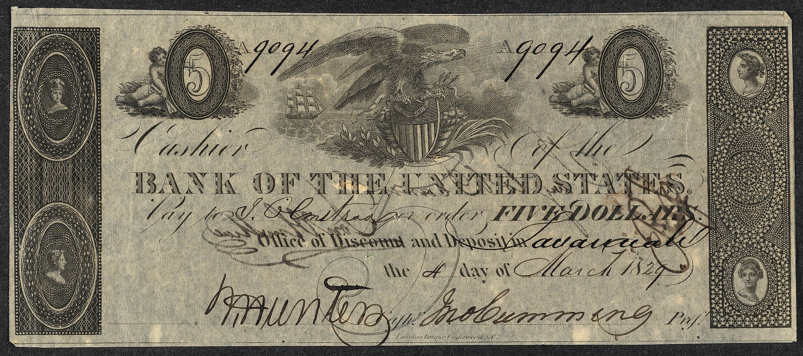

Directions: Read the two records and the background note, then answer the questions.
Background. The Second Bank's charter ran to 1836. In 1832 Henry Clay persuaded its president, Nicholas Biddle, to seek recharter four years early, in an election year. The first record is President Jackson's veto of that bill. The second is the Treasury order of July 1836, issued after the deposits had been removed and the charter had expired, when land was being bought across the West with state bank paper.
"[...] but when the laws undertake to add to these natural and just advantages artificial distinctions, to grant titles, gratuities, and exclusive privileges, to make the rich richer and the potent more powerful, the humble members of society [...] have a right to complain of the injustice of their Government. [...] If it would confine itself to equal protection, and, as Heaven does its rains, shower its favors alike on the high and the low, the rich and the poor, it would be an unqualified blessing. [...]"
Source: Andrew Jackson, Bank Veto Message, July 10, 1832, as carried in the audited TPSP bank record (Yale Avalon Project; from Richardson's Messages and Papers of the Presidents, 1897; punctuation modernized, as the record discloses). Cuts are marked with ellipses.
"[...] you are hereby instructed, after the 15th day of August next, to receive in payment of the public lands nothing except what is directed by the existing laws, viz, gold and silver, and in the proper cases Virginia land scrip: Provided, That till the 15th of December next the same indulgences heretofore extended as to the kind of money received may be continued for any quantity of land not exceeding 320 acres to each purchaser who is an actual settler or bona fide resident in the State where the sales are made."
Source: Circular from Levi Woodbury, Secretary of the Treasury, July 11, 1836, as transcribed by the American Presidency Project. Cuts are marked with ellipses.

1. State Jackson's charge in the veto passage, naming the three gifts the laws grant, the two classes they enrich in his wording, and the standard of equal protection he sets against them.
2. The veto was issued in July 1832, four years before the charter expired and four months before a presidential election. Using the lesson's record, explain in two sentences why the bill reached Jackson's desk that year, naming the two men who arranged its timing and what each expected to gain.
3. Rebuild the Specie Circular's order: the date after which it binds, the payment required for public lands, the exception, and the exception's acre limit, class of purchaser, and closing date.
4. A student writes that Jackson killed a sound bank and caused the Panic of 1837 by himself. Test the claim against this lesson's record. Name two dated facts the claim leaves out, one about the Bank's own conduct and one about the boom that followed its death, and state what each one shows.
1. The veto's charge. Jackson charges that the laws, by granting titles, gratuities, and exclusive privileges, add artificial distinctions to natural advantages and make the rich richer and the potent more powerful, so that the humble members of society have a right to complain of the injustice of their government. Against this he sets equal protection: government showering its favors alike on the high and the low, the rich and the poor, as Heaven does its rains, which would make it an unqualified blessing. (Blueprint 7)
2. Why the bill came in 1832. Henry Clay, preparing to run against Jackson, persuaded Nicholas Biddle to apply for recharter four years early. Clay expected either a signed recharter that split Jackson from his hard money supporters, or a veto he could campaign against as the act of a president destroying a useful institution in an election year; Biddle expected the election pressure to secure the charter while Jackson dared not refuse it. Jackson vetoed on July 10, 1832 and was reelected in November, and the trap's failure belongs in a full answer. (Blueprint 7)
3. The circular's order rebuilt. After August 15, 1836, receivers of public money are to take in payment for public lands nothing except gold and silver, and in the proper cases Virginia land scrip. The exception runs to December 15, 1836: the indulgences formerly extended as to the kind of money received may continue for any quantity of land not exceeding 320 acres, bought by an actual settler or bona fide resident of the state where the sales are made. (Blueprint 8)
4. Test the claim of one man's panic. Any two dated facts, accurately used, one of each kind. About the Bank's conduct: in 1833 and 1834 Biddle deliberately contracted the Bank's loans to produce distress that would force the deposits back, demonstrating the private power over national credit that the veto had charged; or the Bank had spent its influence through loans and contracts to keep its friends in the press and Congress. About the boom: after removal, the pet banks lent on thin reserves and fed a land boom bought with paper, public land sales climbing through 1836; or the Specie Circular of July 1836 pulled specie west just as British lenders contracted credit and cotton fell, and the banks suspended payment in May 1837, ten months after the charter expired. The claim leaves out both the Bank's own use of its power and the unregulated lending that followed it, and either fact, held accurately, breaks the single cause story in a different place. (Blueprint 8)
Teacher note. This check is formative. Question 2 is the one to read closely: a student who thinks the recharter simply came due in 1832 has missed the lesson's political engine, since the charter ran to 1836 and the early vote was a designed trap. Question 4 separates students who can assign causes in sequence from students who settle the panic on one villain, in either direction.